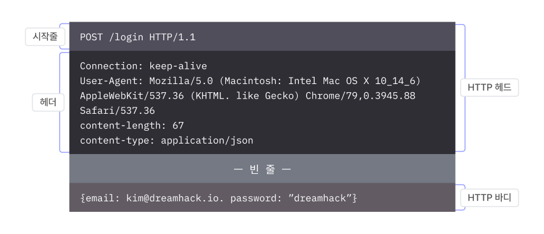

기본 매커니즘은 클라이언트가 서버에게 요청하면, 서버가 응답하는 형식이다.
총 0 ~ 65,535개의 포트가 있으며, 0 ~ 1,023번 포트에 서비스를 실행할려면 관리자 권한이 필요하다.
따라서 클라이언트는 이 대역에서 실행 중인 서비스들은 관리자의 것이라고 신뢰할 수 있다.
포트는 일반적으로 TCP/80 또는 TCP/8080 이다.
HTTP 메시지에는 클라이언트가 전송하는 HTTP 요청, 그리고 서버가 반환하는 HTTP 응답이 있다.
이 둘은 기능과 세부 구조에서 차이가 있지만, HTTP 헤더와 바디로 구성된다는 공통점이 있다.
첫 줄은 시작 줄(Start line), 나머지 줄은 헤더(Header)라고 한다.
시작 줄의 역활은 요청과 응답에서 큰 차이가 있다. 나중에 추가.
HTTP 메시지는 모든 줄이 CRLF로 끝나는 규칙을 가지고 있다.
Start-line 그리고 Headers 각 줄마다 끝에 CRLF 가 붙는다.
그리고 헤더의 끝을 알리기 위해 마지막에 CRLF 가 한번 더 붙는다.
헤더는 필드와 값으로 구성되며(필드이름: 값) HTTP 메시지 또는 바디의 속성을 나타낸다.
하나의 HTTP 메시지에는 0개 이상의 헤더가 있을 수 있다.
HTTP 바디는 헤드의 끝을 나타내는 CRLF 뒤 모든 줄을 말한다. 클라이언트나 서버에게 전송하려는 데이터가 바디에 담긴다.
HTTP 요청은 서버에게 특정 동작을 요구하는 메시지이다.
HTTP 요청의 시작 줄은 메소드(Method), 요청 대상(Request target), 그리고 HTTP 버전으로 구성된다. 각각은 띄어쓰기로 구분된다.
메소드는 요청 대상에 대해 서버가 수행하길 바라는 동작을 나타낸다.
HTTP 표준에 정의된 메소드는 8개가 있다.
1. OPTIONS
2. GET
3. HEAD
4. POST
5. PUT
6.DELETE
7. TARCE
8. CONNECT
요청 대상(URL)는 메소드의 대상을,
HTTP 버전은 클라이언트가 사용하는 HTTP 프로토콜의 버전을 나타낸다.
HTTP 응답은 HTTP 요청에 대한 결과를 반환하는 메시지입니다.
요청을 수행했는지, 하지 않았는지, 안 했다면 이유는 무엇인지와 같은 상태 정보(Status),
그리고 클라이언트에게 전송할 리소스가 응답에 포함된다.
HTTP 응답의 시작 줄은
HTTP 버전,
상태 코드,
그리고
처리 사유로
구성됩니다.
각각은 띄어쓰기로 구분됩니다.
HTTP 버전은 서버에서 사용하는 HTTP 프로토콜의 버전을 나타냅니다. 그리고
상태 코드는 요청에 대한 처리 결과를 세 자릿수로 나타냅니다.